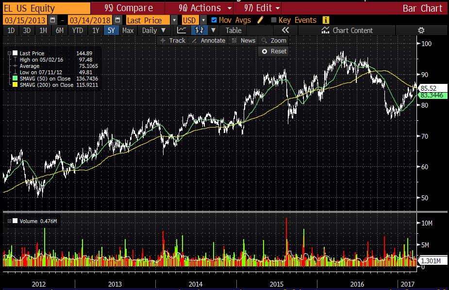
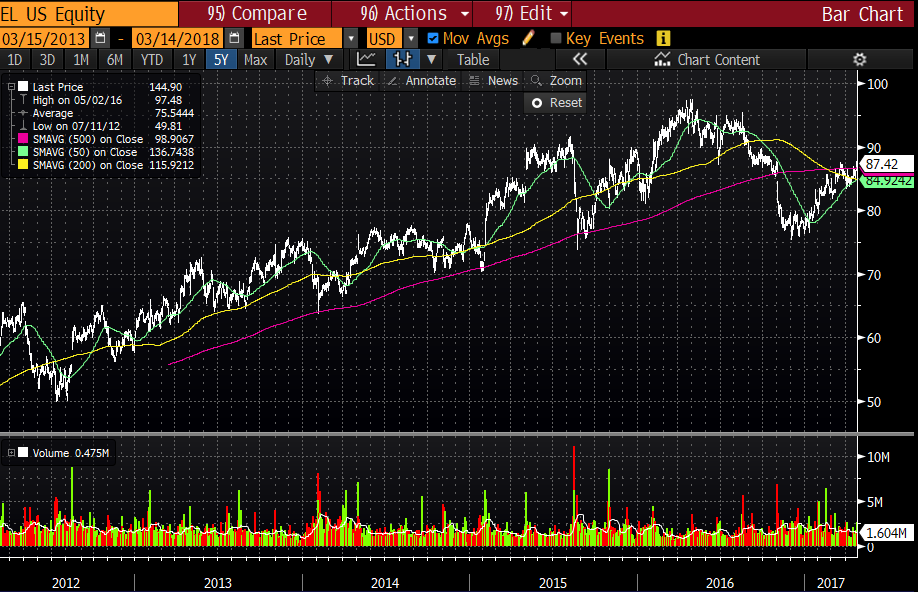
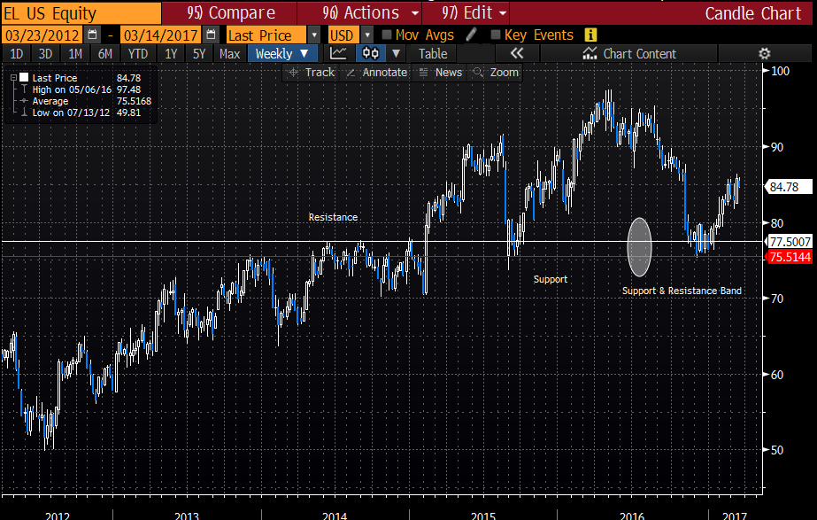
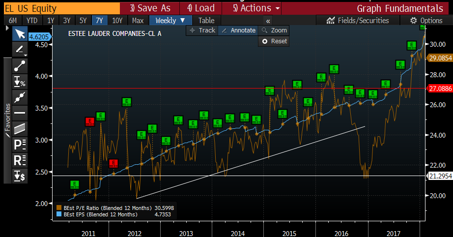

Intro: Nvest’s technology platform allows applications (apps) or tools to be easily built and deployed. Nvest provides the data, algorithmic models and visualization libraries to streamline software development. This means is that the initial tools or apps listed are just a sample of what will be offered in the future. There will be more apps as the developer community grows and builds their own apps.
To kick start the platform, the team at nvest will create several applications targeted to crypto traders and investors. We will get feedback from our users and pivot when necessary. The site nvest.io has a working version of Pattern Finder and Strategy Builder (a pre-curoser to the Bot Builder) for users to test and explore. Users should take note that these tools are a first version releases used to demonstrate the product. New version updates will commence shortly after the token generation event and should dramatically improve the user experience and output results.
A core thread running through all nvest applications is that they are easy to use and interpret. As nvest obtains more user data, applications will become smarter and be able to learn user preferences and provide better recommendations for user specific needs. And when the nvest UI dashboard is deployed, all nvest tools will be easily accessible for viewing and analysis.
Pattern Finder is nvest’s lead tool and is specifically built to analyze time series data, like prices, volume, sentiment, etc, to find patterns in the data automatically. It can scan for all sorts of commonly used technical analysis patterns, like candle stick formations, trends, price patterns, breakouts, consolidations etc. Patter Finder can return many different data points, like future price probability estimates, win/loss ratios, profit targets, maximum loss estimates, display best fit indicators to use and much more. Armed with Pattern Finder data, traders can better analyze a trade setup, game plan for possible outcomes, or even use Pattern Finder to generate a template for an automated trading bot, with no coding required.
In order to use Pattern Finder a user must specify an instrument (crypto, stock, FX etc), a timeframe window, for example if you are looking at a chart, what is the start and end date of the chart and an analysis horizon, or how far back in the past should nvest search for patterns -- collectively termed a ‘trade setup’. Once a user has entered a trade setup, nvest’s algorithms searches for similar patterns across a wide body of data and provides users with the different data outputs. The current version of Pattern Finder hosted on nvest.io displays the top historical price patterns that match the trade setup, along with forward walk probability distribution of those matches. In addition, individual pattern matches are available for the user to analyze.
Try Patter Finder on nvest.io right now!
However there is much more Pattern Finder can do. Say a user has a chart pattern they want to find, like a very specific flag formation arising after a strong trend, Pattern Finder can be used to scan across all crypto markets (and timeframes) to find that pattern. Similarly, one can run Pattern Finder on the entire crypto market data and request to only receive a reports/notifications when it has found a pattern with abnormal expected profits or another field which is returned from the Pattern Finder analysis.
Pattern Finder uses advanced signal processing techniques, like wavelets and multidimensional feature representations to enable almost any type of data to be mined. Unlike traditional backtesting, where a user searches the historical data for a clearly defined rules/logic (if the 50 day moving average crosses below the 20 day moving average, then show me what a buy and hold strategy did etc) to retrieve statistics, Pattern Finder does not rely on any input logic from the user. Instead one can think of Pattern Finder using heuristics or what is sometimes called ‘fuzzy logic’ to determine the rules automatically.
Voodoo or ScienceA common critique of technical analysis is that its rules are mainly subjective and that if you show the same chart to several technical analysts they will often give you different interpretations. Nvest approaches technical analysis from a scientific lense and we fully understand the pitfalls of data mining and subjective pattern recognition. At the same time we understand the benefits that technical analysis has, namely allowing one produce a fast opinion based on objective data inputs related to price and volume. The big problem we attribute to technical analysis is that most people get stuck looking for only a few patterns or indicators as it’s hard to keep track of every possible technical pattern. In addition there is often no scientific analysis used to inform a user what has historically worked and what hasn’t. Anyone who has ever traded intraday will likely appreciate that many indicators like candle stick formations and classic chart patterns work much differently on intraday bars vs daily or weekly bars.
What do you see?For example, take a look at this chart of Estee Lauder (ticker EL) stock from early 2017, shown below. We have overlaid the 50 and 200 day moving average on a daily bar chart, which is a common set up for many stock traders. What do you see? Notice that the 200 day moving average, in yellow seems to work as a good support level in 2013 but afterwards it stops working as price often moves below at times. The 50 day moving average, in green, similarly works as a pivot level most of the time but not so well in 2014-2015.
Now we can also show you the same stock but this time with a 300 day moving average, image below, and you can see that it acts as a much better support line than the 200 day moving average. But if you didn’t plot that line on your chart you might have missed it.

We can also remove all the moving averages and plot a weekly candle chart to try and view support and resistance levels. Did you notice that $75-77 was a major support band in last 2016 and early 2017, generated from previous support and resistance levels? If you had too many moving averages or not enough history in your chart you might have missed it.
The really great thing about Pattern Finder is that you can easily add in non-price data as well. In the chart below, we show EL’s Price/Earnings (P/E) ratio bands, in orange and forward EPS in blue. While most retail traders probably don’t have access to this data or don’t use it, almost all institutional investors pay attention to a stock’s P/E ratio and EPS growth trend. It would have been nice to know that in late 2016, when the stock was selling off into the weekly support/resistance level the P/E ratio was at the lower end of the range. But if you didn’t have the data or pay attention to it, how would you have ever known? Pattern Finder puts the power of data and patterns in your hands. We give you the statistics, we show you what matters, allowing you to make better decisions.
Nvest is collecting lots of data but it doesn’t do you any good unless you can do something with it. With Bot Builder you can easily access the data and create your own bot to perform an action with it. Your bot can be as simple or as complex as you want it; trigger an email alert if the price of Bitcoin goes above a certain level or go advanced and build your own trading strategy. Bot builder will provide easy to use templates to allow new users to experiment and also tutorials showing how easy it is to create your own bot. Using nvest’s drag and drop user interface, built on top MIT’s wonderfully popular scratch library, bot builder allows you to create your own algorithms with writing any code.
Bot builder is currently running on nvest.io under the tab “Strategy Builder”. While current functionality is limited to building a trading strategy, nvest will quickly add useful features like email/ sms/ telegram alerts and daily reports in Phase 1 of the project roadmap.
As crypto markets have evolved into an entire ecosystem with thousands of projects and hundreds of exchanges, analyzing the entire system can provide insights that can be missed if you aren’t looking holistically. Since nvest is in the business of collecting and analyzing data, we make it easy to analyze the entire crypto market. We leverage established solutions from traditional financial markets and apply them to crypto markets, all the while understanding the nuances and tailoring the output for crypto.
Crypto sight will provide users the ability to create their own reports, including daily summaries, crypto scans and statistical insights. Nvest will provide a variety of templates for users to start and allow users to easily build and customize to their own needs.
For example, a daily report might be generated which can summarize all of the day’s news on a portfolio of crypto currencies and be sent automatically to the user every night. Technical traders can use pre-built scans to find trading opportunities or create their own customized versions. Nvest also provides an extensive library of statistics, which can be easily accessed. For example you can analyze bitcoin price data by day and time of the week to show you when the most and least volatile times of the week to trade are.
Check out the gallary of crypto sight images on our reddit or twitter pages
Statistical analysis is good when you have numbers, but what do you do when the data you are dealing with is words and text? Fortunately machine learning has been working on the problem for a while and recent advances in the field of NLP (“Natural Language Processing”) allows for excellent analytical insights on text data.
NLP encompasses a variety of different applications, from sentiment analysis, speech recognition, automatic summary, topic segmentation, relationship extraction and others (see Wikipedia). A common thread in many NLP tasks is that they require lots of data and they still involve human oversight, particularly related to training data, before the algorithmic models can be created. The good thing is that once an NLP model is loaded with the proper data and settings, you don’t need to be a machine learning expert to be able to use it. Nvest’s team of machine learning experts will provide the necessary data and supervision for NLP model creation so that users can easily build on top of our models and deploy their own NLP tools.
Most NLP tools also allow for a high degree of customization which is often inaccessible unless you are a developer. Nvest believes that each user has their own unique needs and style and we want to provide everyone a unique experience. Creating a sentiment analysis indicator is good but creating one personalized just for you is so much better. Should a day trader and a long term investor use the same sentiment analysis settings? By guiding users through the different setting available and making them easy to adjust, nvest enables each user to maximize their experience.
Token Discovery tools can be applied to a variety of data sources and can be easily accessed via the nvest API. You can use Token Discovery to analyze a white paper and use the results as an input in your ICO spreadsheet. For example, if there is a particular word or phrase that you are interested with, or conversely, want to avoid, you can easily create your own Token Discovery score to scan through hundreds of white papers and report the results. Or you can use pre-built models like a grammar score, word complexity score or even a fraud test as a new data point to include in your ICO analysis. Enhance your ICO spreadsheet with advanced data that is processed in seconds and always up to date with Token Discovery.
Detailed analysis performed by a specialist can often yield valuable information and insights that a non-specialist would never see. Nvest provides a platform for crypto experts to present their analysis and in return earn nvest token rewards. While many investors and traders publish their views and analysis it’s hard to distinguish who the experts are and what their opinions are worth.
With Opinionator, nvest creates a market for both consumers and publishers of research. It allows anyone to publish their analysis with a variety of settings (public/private) and simplifies payments.
Using nvest tokens as rewards, Opinionatior is ideal for new research analysts and provides them reach to the entire nvest community of users. If a given research analyst is able to provide a different angle of insight to what is generally available (ie most of the research on topic is related to technical analysis and then a cryptographer offers a totally different view) then their input should be highly valued and incentivized. Given that higher quality research should demand higher prices, consumers can also view how many nvest tokens a user has earned as an extra input when searching for research, similar to searching for high gross blog posts on Steemit.
Successful investing often involves managing a portfolio of investments and for traders managing multiple positions at the same time. Porfoliorizer gives you the tools, specifically tailored to crypto markets so that you can analyze your entire portfolio. You can view attribution reports to show you where you made and lost money, monitor where your portfolio volatility of coming from, see how correlated your holdings are, create stress tests, goal settings and more. Leveraging traditional financial portfolio theories and tools, nvest’s Porfoliorizer tools will also be tailored to crypto markets, which has price volatility and skew unlike traditional assets of stocks and bonds and is more akin venture capital investments. This means that existing portfolio management tools built for the stock market may need to be modified in certain instances. Given that many modern portfolio management theories and applications require a strong mathematic knowledge alongside practical understanding of how markets work. But nvest's expert team will ensure any portfolio tools we release will be theoretically and practically adapted to crypto so you don’t have to worry.
Crypto portfolio analytics are often neglected or difficult to use but with nvest we make it easy and intuitive allowing you to analyze your entire portfolio and provide you a richer set of insights that you could get from just analyzing an individual crypto on its own. As crypto markets mature, many crypto investors will realize that managing their portfolio will be just as important as managing the next trade.